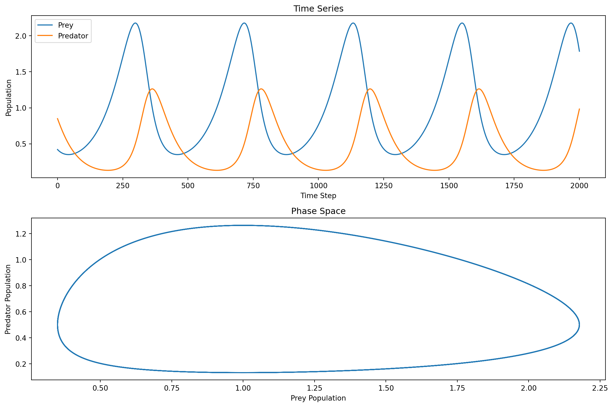
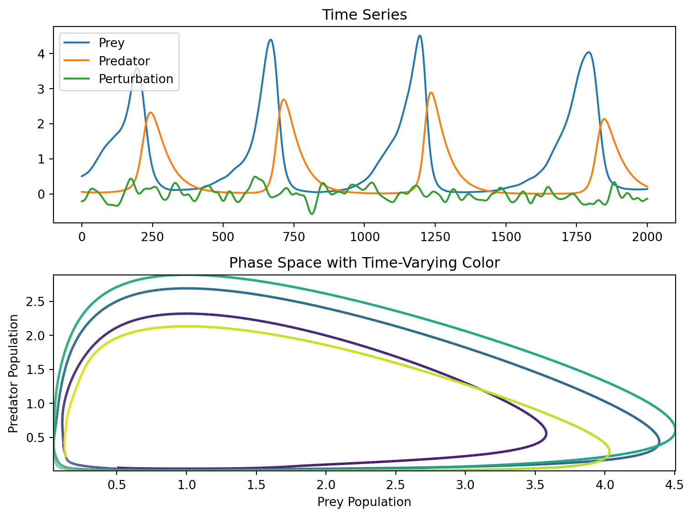

A look at some of the foundations of automatic differentiation and the Gauss-Newton optimization method.
Optimization
Gauss-Newton
Automatic Differentiation
PyTorch
Automatic differentiation is a powerful tool for solving optimization problems that can be used to automate the process of Gauss-Newton optimization. Here we put together an implementation of the Gauss-Newton method using PyTorch.
Author
Simon Ghyselincks
Published
October 8, 2024
$$
$$
Automatic Differentiation
Returning to the Lotka-Volterra model, we can now use automatic differentiation to compute the Jacobian matrix of the forward model. In fact, it can be shown that we can perform Gauss-Newton optimization more efficiently by using the Jacobian-vector product (JVP) and the vector-Jacobian product (VJP) instead of the full Jacobian matrix, since in the algorithm what we are truly interested in is the product of the Jacobian with a vector or its transpose. This equates to a directional derivative.
Application to the Lotka-Volterra Model
Take a forward model \(F(p)\) for which we want a linear approximation at \(p_k\). We can write the Taylor expansion of the forward model as:
If we make \(\epsilon\) very small then the Jacobian of the forward problem can be numerically approximated and bounded by a small \(\mathcal{O}(\epsilon)\). The next step to fully recover the Jacobian is to take the gradient with respect to \(v\) of the left-hand side of the equation.
The gradient with respect to \(v\) can be traced through with automatic differentiation. So we apply a chain of operations, the pytorch Jacobian vector product, followed by backpropagation on a surrogate \(v\) that was passed to the function to get the Jacobian of the forward model. The same principles can be used to recover \(J_k^T\).
There is also the direct method that is avaible for computing the Jacobian matrix using the torch library. Both cases are shown below. Note that the tensors have a requires_grad=True flag set to allow for the gradients to be computed, it indicates that the tensor is part of the computational graph for backpropagation and tracing by how much each element of \(v\) contributed to the jvp result.
The fundamental use of the jvp or the vjp is to compute the directional derivate or its transpose without computing the gradient with respect to \(v\). This is because the jacobian matrix encodes the directional derivatives of the function at a point.
\[d_k = J_k^T v\]
Show the code
import torchfrom torch.autograd.functional import jvpfrom torch.autograd.functional import jacobian# Define a simple forward functiondef F(p):return torch.stack([p[0]**2+ p[1], p[1]**3+ p[0]])# Input point p_kp_k = torch.tensor([1.0, 1.0])# Arbitrary vector v, same size as p_kv = torch.tensor([1.0,1.0], requires_grad=True)# Compute the Jacobian-vector product (J(p) * v)F_output, jvp_result = jvp(F, (p_k,), v, create_graph=True)print("Function output:")print(F_output)print("Jacobian-vector product:")print(jvp_result)# Initialize a list to store each row of the Jacobianjacobian_rows = []# Compute the gradient of each component of the JVP result separately, retaining the graph to avoid re-computationfor i inrange(F_output.shape[0]): v.grad =None# Clear the gradient jvp_result.backward(torch.tensor([1.0if i == j else0.0for j inrange(F_output.shape[0])]), retain_graph=True) jacobian_rows.append(v.grad.clone()) # Append the gradient (row of the Jacobian)# Stack the rows to get the full Jacobian matrixjacobian_matrix = torch.stack(jacobian_rows, dim=0)# Print the Jacobian matrixprint("Jacobian matrix at p_k:")print(jacobian_matrix)# Compute the full Jacobian matrix directlyjacobian_matrix = jacobian(F, p_k)# Print the Jacobian matrixprint("Jacobian matrix at p_k:")print(jacobian_matrix)
Function output:
tensor([2., 2.], grad_fn=<StackBackward0>)
Jacobian-vector product:
tensor([3., 4.], grad_fn=<AddBackward0>)
Jacobian matrix at p_k:
tensor([[2., 1.],
[1., 3.]])
Jacobian matrix at p_k:
tensor([[2., 1.],
[1., 3.]])
Fitting the Lotka-Volterra Model in PyTorch
Now, all the previous theory can be combined to form a PyTorch training loop that will solve the non-linear least squares problem using the Gauss-Newton method, utilizing the conjugate gradient method to solve the normal equations involved.
To make the solution components easier to understand, they are separated into different class objects that contain the necessary components for each part of the solution. The main ingredients that will be required are:
ODE Integrator
Implements the Runge-Kutta 4th Order Method for numerically solving ordinary differential equations (ODEs).
Trainable Lotka-Volterra Model
A class that incorporates PyTorch’s gradient tracking to enable training of the Lotka-Volterra model parameters.
Gauss-Newton Optimizer
A class designed to solve the non-linear least squares problem efficiently using the Gauss-Newton optimization technique.
Conjugate Gradient Descent Function
A function implemented to perform conjugate gradient descent, which is utilized to solve the normal equations arising in the Gauss-Newton method.
RK4 and Lotka-Volterra Model
The Runge-Kutta 4th order method is a numerical solver for ODEs that is of higher order than the Euler method, reducing the error in the solution to \(O(h^4)\). A more detailed description of the method can be found in the Wikipedia article.
The Lotka-Volterra model is implemented this time in PyTorch, with the parameters \(\alpha\), \(\beta\), \(\gamma\), and \(\delta\) being trainable. The parameters themselves are intialized to a starting value, but are also registered as parameters using the torch nn.Parameter class. This allows the optimizer to update the parameters during training. The nn.Module class is used to apply a PyTorch interface to the model that expects a forward method to be implemented, but will also implement features such as:
For this exercise, the Lotka-Volterra model is implemented with the option to have time-varying parameters. While for the starting case the parameters are assumed to be constant over time.
import torchfrom torch import nnimport matplotlib.pyplot as pltimport torchfrom torch import nnimport matplotlib.pyplot as pltclass RungeKutta4:""" Runge-Kutta 4th Order Integrator for solving ODEs. """def__init__(self, func, time_steps, time_horizon):""" Initializes the RK4 integrator. Args: func (callable): The function defining the ODE system, f(x, i). time_steps (int): Number of time steps to integrate over. time_horizon (float): Length of the time horizon. """self.func = funcself.time_steps = time_stepsself.dt = time_horizon /self.time_stepsdef integrate(self, x0):""" Performs the RK4 integration. Args: x0 (torch.Tensor): Initial state tensor of shape (n_vars,). Returns: torch.Tensor: Tensor containing the solution at each time step of shape (n_vars, time_steps + 1). """ X = torch.zeros(x0.size(0), self.time_steps +1, dtype=x0.dtype, device=x0.device) X[:, 0] = x0for i inrange(self.time_steps): k1 =self.func(X[:, i], i) k2 =self.func(X[:, i] +self.dt * k1 /2, i) k3 =self.func(X[:, i] +self.dt * k2 /2, i) k4 =self.func(X[:, i] +self.dt * k3, i) X[:, i +1] = X[:, i] + (self.dt /6) * (k1 +2* k2 +2* k3 + k4)return Xclass LotkaVolterra(nn.Module):""" Lotka-Volterra (Predator-Prey) Model with Trainable Parameters. """def__init__(self, period, n_time_steps, perturbation=None, time_variant=False):""" Initializes the Lotka-Volterra model. Args: period (float): Length of the time horizon. n_time_steps (int): Number of time steps for integration. perturbation (torch.Tensor, optional): Tensor to perturb alpha parameters. Defaults to None. time_variant (bool, optional): If True, parameters are time-variant. Defaults to False. """super(LotkaVolterra, self).__init__()self.time_steps = n_time_stepsself.period = periodself.time_variant = time_variantif perturbation isNone: perturbation = torch.zeros(n_time_steps +1, dtype=torch.float32)# Initialize trainable parameters, which can vary over time stepsif time_variant:self.alpha = nn.Parameter((2/3) * torch.ones(n_time_steps +1,) + perturbation)self.beta = nn.Parameter((4/3) * torch.ones(n_time_steps +1))self.gamma = nn.Parameter(1.0* torch.ones(n_time_steps +1))self.delta = nn.Parameter(1.0* torch.ones(n_time_steps +1))else:self.alpha = nn.Parameter((2/3) * torch.ones(1,) + perturbation)self.beta = nn.Parameter((4/3) * torch.ones(1))self.gamma = nn.Parameter(1.0* torch.ones(1))self.delta = nn.Parameter(1.0* torch.ones(1))self.ode_solver = RungeKutta4(self.dxdt, n_time_steps, period)def dxdt(self, x, i):""" Computes the derivatives for the Lotka-Volterra equations. """ifnotself.time_variant:# In case where parameters are not time-variant,# we set i to 0 to use the first and only parameter value i =0 dx1dt =self.alpha[i]*x[0] -self.beta[i]*x[0]*x[1] dx2dt =-self.gamma[i]*x[1] +self.delta[i]*x[0]*x[1] dxdt = torch.zeros(2) dxdt[0] = dx1dt dxdt[1] = dx2dtreturn dxdtdef forward(self, x0):""" Solves the Lotka-Volterra equations using RK4. Args: x0 (torch.Tensor): Initial state tensor [prey, predator]. Returns: torch.Tensor: Solution tensor over time of shape (2, time_steps + 1). """returnself.ode_solver.integrate(x0)
Now to check the implementation, a test run of the model with a random initial state is performed.
Show the code
period =40.0n_time_steps =2000model = LotkaVolterra(period=period, n_time_steps=n_time_steps)initial_state = torch.rand(2)# Note that calling the model will call its forward method for a nn.Modulesolution = model(initial_state)# Time series plotplt.subplot(2, 1, 1)plt.plot(solution[0, :].detach().numpy(), label='Prey')plt.plot(solution[1, :].detach().numpy(), label='Predator')plt.title('Time Series')plt.xlabel('Time Step')plt.ylabel('Population')plt.legend()# Phase space plotplt.subplot(2, 1, 2)plt.plot(solution[0, :].detach().numpy(), solution[1, :].detach().numpy())plt.title('Phase Space')plt.xlabel('Prey Population')plt.ylabel('Predator Population')plt.tight_layout()plt.show()

Example of the Lotka-Volterra model integration.
To take the model a step further, it can be used to generate a toy dataset that will be used to fit the model parameters using the Gauss-Newton optimization method.To make a dataset that will not have a perfect fit, the time variant parameters and the pertubation variables are used to produce and interesting dataset.
Show the code
import numpy as npfrom matplotlib.collections import LineCollectionfrom torch.nn.functional import paddef generate_data_set(forward_model, period=40.0, n_time_steps=2000, n_realizations=10):""" Generates a training dataset for the Lotka-Volterra model by simulating multiple realizations with perturbed parameters. Args: forward_model (callable): The Lotka-Volterra model to simulate. period (float, optional): Length of the time horizon. Defaults to 40.0. n_time_steps (int, optional): Number of time steps for integration. Defaults to 2000. n_realizations (int, optional): Number of realizations to simulate. Defaults to 10. Returns: tuple: A tuple containing two lists: - XX (list of torch.Tensor): Simulated population trajectories for each realization. - M (list of torch.Tensor): Perturbations for each realization. """ pop_data_runs = [] perturbations = []# Iterate over the number of desired realizationsfor run_idx inrange(n_realizations):print(f'Computing realization {run_idx +1}/{n_realizations}')# Noise pertubation to make more interesting dynamics noise = torch.randn(1, 1, n_time_steps +1) # Apply some smoothing to the pertubation using a low-pass filter to make natural variationsfor i inrange(250): noise = pad(noise, pad=(1, 1), mode='reflect') noise = (noise[:, :, :-2] +2* noise[:, :, 1:-1] + noise[:, :, 2:]) /4 noise = noise.squeeze()# Create a time variant model with the perturbation model = forward_model(period, n_time_steps, noise, time_variant=True)# Generate random initial conditions initial_pop = torch.rand(2)# Run the forward dynamics to generate the data pop_data = model(initial_pop)# Append the results to the respective lists pop_data_runs.append(pop_data) perturbations.append(noise)return pop_data_runs, perturbationsXX, M = generate_data_set(LotkaVolterra, period=40, n_time_steps=2000, n_realizations=1)X = XX[0]pert = M[0]# Time series plotplt.subplot(2,1,1)plt.plot(X[0,:].detach(), label='Prey')plt.plot(X[1,:].detach(), label='Predator')plt.plot(pert.detach(), label='Perturbation')plt.legend()plt.title('Time Series')# Phase space plot with color gradientplt.subplot(2,1,2)# Prepare data for LineCollectionprey = X[0,:].detach().numpy()predator = X[1,:].detach().numpy()points = np.array([prey, predator]).T.reshape(-1, 1, 2)segments = np.concatenate([points[:-1], points[1:]], axis=1)cmap ='viridis'# Create a LineCollection with the chosen colormaplc = LineCollection(segments, cmap=cmap, norm=plt.Normalize(0, 1))lc.set_array(np.linspace(0, 1, len(segments))) # Normalize color range to [0,1]lc.set_linewidth(2)# Add the LineCollection to the plotplt.gca().add_collection(lc)# Set plot limits to the data rangeplt.xlim(prey.min(), prey.max())plt.ylim(predator.min(), predator.max())plt.title('Phase Space with Time-Varying Color')plt.xlabel('Prey Population')plt.ylabel('Predator Population')plt.tight_layout()plt.show()
Computing realization 1/1

Time variant Lotka-Volterra model with perturbations.
As can be seen by the data, the pertubations over time make the dynamics of the system only roughly periodic. This will make the optimization problem more interesting to solve.
Conjugate Gradient Descent and Gauss-Newton Optimizer
The Gauss-Newton method will need to make use of some important subfunctions to operate efficiently. One will be the computation of its components using the jvp and vjp functions, and the other will be the conjugate gradient descent method to solve the normal equations.
Recall the algorithm for the Gauss-Newton method:
\begin{algorithm} \caption{Gauss-Newton Algorithm for Non-linear Least Squares}\begin{algorithmic} \State \textbf{Input:} Initial guess $p_0$, maximum iterations $K$, tolerance $\epsilon$ \State \textbf{Initialize} $p_0$ \For{$k = 0, 1, 2, \ldots$} \State Compute the Jacobian $J_G$ of $G(p)$ at $p_k$ \State Compute the transpose $J_G^T$ of the Jacobian \State Compute the residual $r_k =G(p_k)$ (forward model) \State Compute the step $s_k = (J_G(p_k)^T J_G(p_k) )^{-1} J_G(p_k) r_k$ \State Update the parameters $p_{k+1} = p_k + \mu_k s_k$ \If{$\|s_k\| < \epsilon$} \State \textbf{Stop} \EndIf \EndFor \State \textbf{Output:} $p_{k+1}$ as the optimal solution \end{algorithmic} \end{algorithm}